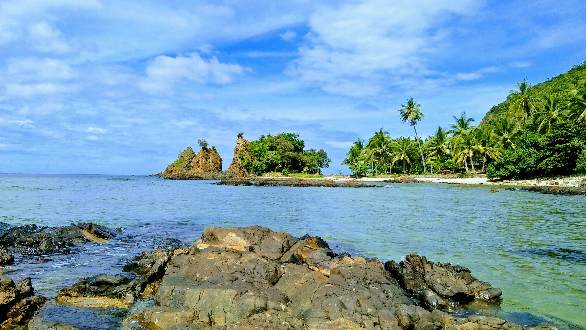
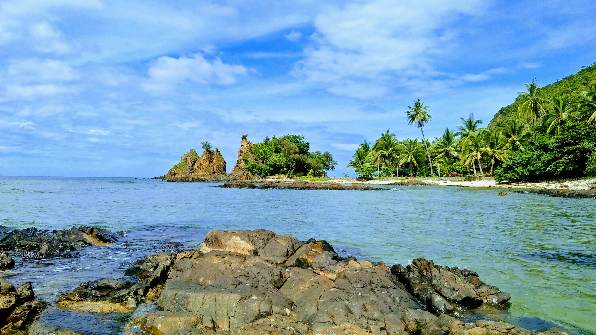

About Me
My name is Mon Carlo Rellesiva Alalan, and I'm 22 years old. I was born on July 03, 2002 in Baler, Aurora, Philippines.
I belong to The Church of Jesus Christ of Latter-day Saints, and I was baptized on November 13, 2010.
I served my Full-time mission at the Philippines Olongapo Mission from March 03, 2022 to March 15, 2024, where I had the privilege to meet wonderful people and contribute to their spiritual journeys.
My Hobbies
When I'm not working or serving others, I enjoy engaging in various activities that help me unwind and stay creative. Some of my hobbies include:
- Playing the guitar and piano
- Photography – capturing memories of beautiful landscapes and people
- Reading books, especially on personal growth and spirituality
- Traveling to new places and experiencing different cultures

Personal Achievements
I have had the honor of achieving personal milestones that have helped shape who I am today. Some of my key achievements include:
- Successfully completing my missionary service with the Church of Jesus Christ of Latter-day Saints
- Graduating with honors from my local university
- Learning new skills, including photography and music
- Being a part of community service projects that help those in need
My Family
My parents are Cesario Parallon Alalan Jr. and Liza Marie Rellesiva Alalan.
I have 9 siblings, and I am the fourth child. The oldest among us is the only girl. Our family shares a close bond, and we enjoy spending time together on weekends and holidays.

Mission Experience
Serving my mission was a life-changing experience. During my time in the Philippines Olongapo Mission, I was able to share the gospel, serve those in need, and build lasting relationships. Here are some highlights of my mission:
- Teaching people from various cultural backgrounds and learning from their experiences
- Organizing and participating in community service projects
- Strengthening my faith and understanding of the gospel
- Building lifelong friendships with fellow missionaries and local members
Photo Gallery
 


Contact Me
If you'd like to reach out or learn more about my experiences, feel free to contact me:
- Email: caloycena08
- Phone: +63 962 446 5620
- Facebook: My Profile